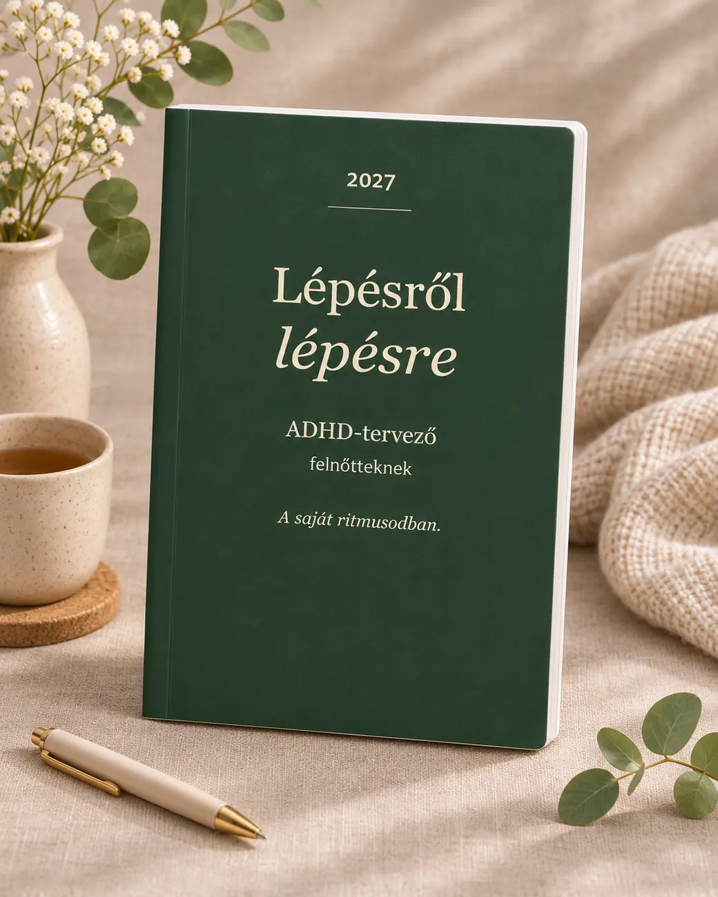

Az eredeti magyar borító alapján készített AI-látványterv. Nem legyártott füzet vagy napló fényképe.
Nyomdai anyag · előkészítés alatt
Lépésről lépésre · 2027
ADHD-tervező felnőtteknek · 2027
A kiadványok magyar nyelven készültek. A más nyelvű ismertetők nem jelentenek lefordított nyomtatott kiadást.
Kinek szól?
Felnőtteknek, akiknek jól jön a rugalmas tervezés és újrakezdés
Mi van benne?
Havi és heti lapok, számlák, háztartás, ügyintézés, tanulás és kímélő nap
Hogyan használd?
Kezdd az aktuális hónapnál. Nem kell bepótolni az üres lapokat.
Előrendelés e-mailben
Előrendelés e-mailben
Már most elküldheted az előrendelésedet e-mailben. Írd meg, melyik kiadványból hány példányt szeretnél. A webshop és az árak még készülnek. A levél elküldése önmagában nem jelent visszaigazolt rendelést vagy fizetési kötelezettséget.
Előrendelés e-mailbenFizetési adatokat nem kérünk e-mailben.
AI & Editorial Trust
Egyes szerkesztett szövegek, illusztrációk és látványtervek AI-közreműködéssel készültek. Az Egy kis tér 2026. november 19-i munkakézirat, független szakmai lektorálása és olvasói kipróbálása még hátravan. A Helyed van köztünk kártyacsomagról valódi termékfotók vannak. Egyik termék sem diagnosztikai vagy terápiás szolgáltatás.
A projektről